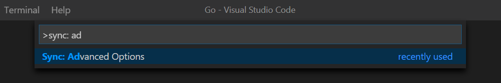

剛結束完一整年度的課
該來更新文章啦~
-
最近剛換了個新環境
以往都是手動安裝Extensions的我，最近終於意識到這是個蠢行為
於是決定來研究一下在各個環境中如何同步，使各環境的Extensions保持一致
安裝Setting Sync並登入GitHub
今天我們的主角是Setting Sync！
先到VSCode中，Extensions的介面搜尋Setting Sync並安裝
接著應該會看到以下畫面
(如果沒有的話，使用下一步驟中的 Ctrl + Shift + P 並搜尋 Sync: Update 然後Enter，應該就會跳出來了)
點LOGIN WITH GITHUB
然後會跳出瀏覽器畫面，這時順著指示登入你的GitHub帳號就好
登入完Github帳號後畫面如下
這時只要回到VSCode的畫面就好了哦！畫面如下
因為我們這時還沒有上傳任何的Gist，所以直接Skip就好
上傳你的設定檔
接下來就是上傳的部分啦~
按下 Ctrl + Shift + P 呼叫出命令列
並搜尋 Sync: Update，看到以下選項直接Enter
確認你的設定檔並記下Gist ID
先到GitHub
然後點擊右上角頭像
選擇Your gists
然後會看到以下畫面
直接點進去，你會看到你的設定檔
但這個步驟比較重要的是記好上面的Gist ID！
設定Gist ID
方法一
一樣安裝Setting Sync並登入GitHub
回到VSCode的畫面時就可以看到你上傳的Gist了哦
選擇的話就會儲存該Gist ID到設定囉~
方法二
按下 Ctrl + Shift + P 呼叫出命令列
並搜尋 Sync: Advanced，看到以下選項直接Enter

接著找到 Sync: Open Settings 並開啟設定畫面
接著把你剛剛記下來的Gist ID貼到這裡的Gist ID的欄位，就完成設定了哦！
同步！
按下 Ctrl + Shift + P 呼叫出命令列
並搜尋 Sync: Download，看到以下選項直接Enter
等到下載完成就同步成功了哦！